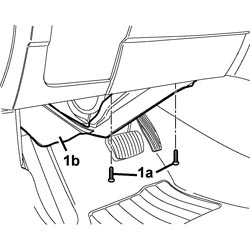

5010C57 LEFT LOWER AIR DIFFUSER - R R
- Path
- Procedures > 50 AUXILIARY UNITS > 5010 CLIMATE CONTROL - MISCELLANEOUS > 5010C AIR VENTS > 5010C57 LEFT LOWER AIR DIFFUSER - R R
- Kind
- repair procedure (removal / refitting; the operation number is the code)
- Applies to
- all engines; all production periods
- Interactive page
- https://sloeber94.github.io/elrnDB-fCrm/en/#/194000589
Applies to: all engines; all production periods
 Removing
Removing
 Refitting
Refitting1. Working on the lower left hand side of the dashboard, undo the fixing bolts (1a) and release the vent (1b) from the mounting points under the dashboard. Then release the vent from the climate control casing and remove it from the dashboard.

Applies to: all engines; all production periods
Refitting
Removing- Fit the vent on the climate control casing, checking that the seal is correctly fitted.
- Position the edges on the mounting points and tighten the fixing bolts.
Topics that link to this page (32)
- 1820B20 MASTER CYLINDER (PUMP) - R + R
- 1820B21 MASTER CYLINDER (PUMP) - R R FOR RIGHT HAND DRIVE VERSIONS
- 2125C30 GEAR ENGAGEMENT/SELECTION CABLES - R.R
- 2125C32 GEAR CONTROL LEVER MOUNT - R R
- 2135A10 AUTOMATIC TRANSMISSION MANUAL CONTROL LEVER AND SUPPORT - R + R AND OVERHAUL
- 2135A12 GEAR ENGAGEMENT CABLE - R R
- 3330B02 PEDAL ASSEMBLY - R.R
- 3330B08 PEDAL MOUNT ASSEMBLY - R R AND OVERHAUL WITH FACIA TRIM SUPPORT BEAM REMOVED FOR RIGHT-HAND DRIVE VERSIONS
- 3330B22 BRAKE PEDAL - R+R FOR MANUAL GEARBOX VERSIONS
- 3330B26 CLUTCH PEDAL - R+R
- 3330B38 PEDAL UNIT MOUNT - R.R.
- 3330D02 BRAKE SERVO/BRAKE PUMP ASSEMBLY - R.R.
- 4110A30 SUPPORT WITH STEERING CONTROL SHAFTS - R+R
- 5010B24 UNDER-FACIA AIR DUCTS - R.R.
- 5010B47 SIDE AIR DUCT TO REAR SEATS (ONE), LH OR RH - R.R.
- 5040C10 AIR CONDITIONING CASING - R.R
- 5040C50 AIR CONDITIONING HEATER RADIATOR - R.R.
- 5040C64 A/C EVAPORATOR - R+R
- 5040D80 AIR CONDITIONER SYSTEM WIRING BUNDLE - R R OR REPLACE
- 5040D94 AIR CONDITIONING LEFT UPPER AIR DISTRIBUTION FLAP MOTOR (DEFROST) - R.R
- 5505C10 FRONT CROSSMEMBER WIRING - R.R
- 5505C31 BUILT-IN WIRING UNDER DASHBOARD - R.R.
- 5505C41 PASSENGER COMPARTMENT WIRING - R.R
- 5580E17 STEERING LOCK - R.R
- 7005A14 FRONT SIDE DOOR - ADJUST CENTERING AND MOULDING - INCLUDES ADAPTATION OF HINGES AND SEALS ON DOOR COMPARTMENT
- 7005A24 FRONT SIDE DOOR HINGES (BOLTED) - R.R. WITH DOOR DETACHED
- 7040A10 DASHBOARD TRIM - R+R
- 7040A30 LEFT LOWER DASHBOARD TRIM - R.R.
- 7040A60 UNDERDASHBOARD TRIM - R.R.
- 7040A97 INSTRUMENT PANEL TRIM SUPPORTING CROSSMEMBER - R.R
- 7040L17 PASSENGER COMPARTMENT FLOOR FRONT CARPET - R.R.
- 7095E22 SOUND-PROOF PANEL UNDER DASHBOARD SUPPORTING CROSSMEMBER - R.R.